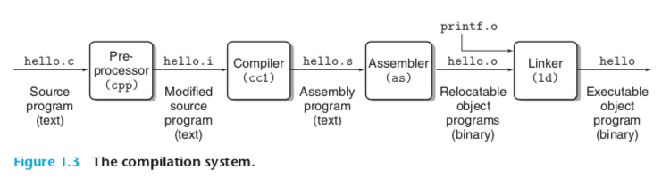
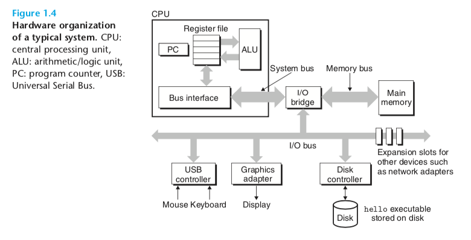
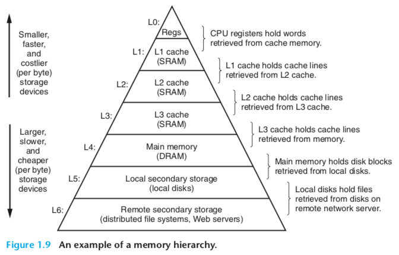
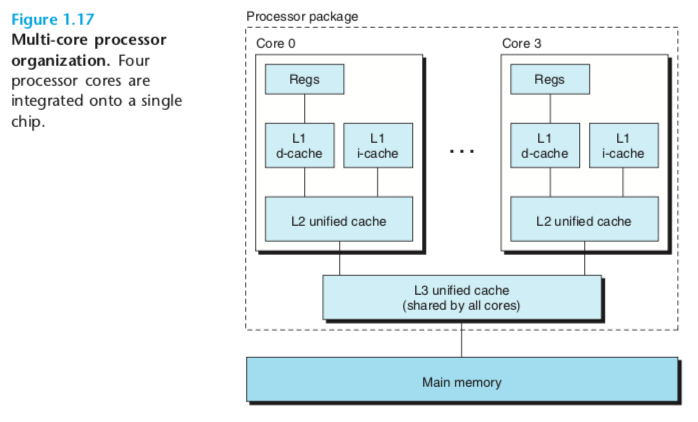
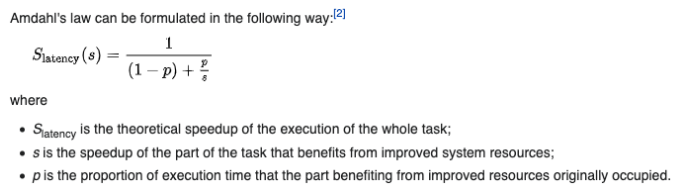

A Tour of Computer Systems¶
Introduction¶
The first chapter in “Computer Systems: A Programmer’s Perspective” is called “A Tour of Computer Systems”. It starts by defining a computer system as “hardware and systems software that work together to run application programs.”
The authors motivate the study of computer systems by describing the following practical applications:
optimize C code by exploiting the design of modern processors and memory systems
avoid buffer overflow vulnerabilities 1 from understanding how a compiler implements procedure calls
debug linking errors
write concurrent programs
Compilation¶
A computer program is written in a programming language like C and converted to an executable object file by a compilation system following these steps:

The executable object file contains the binary code for the instructions for the hardware. In a computer, all information is represented as sequence of bits and how those bits are interpreted depends on the context.
Here are some questions related to compiler optimization that are discussed in Chapters 3, 5, and 6 of the book:
“Is a switch statement always more efficient than a sequence of if-else statements?”
“How much overhead is incurred by a function call?”
“Is a while loop more efficient than a for loop?”
“Are pointer references more efficient than array indexes?”
“Why does our loop run so much faster if we sum into a local variable instead of an argument that is passed by reference?”
“How can a function run faster when we simply rearrange the parentheses in an arithmetic expression?”
Here are some questions related to the linker that are discussed in Chapter 7 of the book:
“What does it mean when the linker reports that it cannot resolve a reference?”
“What is the difference between a static variable and a global variable?”
“What happens if you define two global variables in different C files with the same name?”
“What is the difference between a static library and a dynamic library?”
“Why does it matter what order we list libraries on the command line?”
“Why do some linker-related errors not appear until run time?”
Hardware¶
Here is the basic organization of the hardware in a computer:

The bus is a “collection of electrical conduits that carry bytes of information back and forth between the components.”
Each I/O device is connected to the I/O bus by either a controller or an adapter. Controllers are “chip sets in the device itself or on the system’s main printed circuit board.” An adapter is a “card that plugs into a slot on the motherboard whose purpose is transfer information back and forth between the I/O bus and an I/O device”
Main memory is a physically “a collection of dynamic random access memory (DRAM) chips” and logically organized as “a linear array of bytes, each with its own unique address (array index) starting at zero”. On an x86-64 machine running Linux, here are the sizes of different data types:
short: 2 bytes
int: 4 bytes
float: 4 bytes
long: 8 bytes
double: 8 bytes
The CPU, i.e., the processor, is “the engine that interprets (or executes) instructions stored in main memory.”
The register file is a “small storage device that consists of a collection of word-size registers, each with its own unique name”. The program counter is a register that “points at (contains the address of) some machine-language instruction in main memory.”
A word is “the natural unit of data used by a particular processor design. A word is a fixed-sized piece of data handled as a unit by the instruction set or the hardware of the processor” (https://en.wikipedia.org/wiki/Word_(computer_architecture)). Word size is the number of bytes in a word and a “fundamental system parameter that varies across systems”. Most modern computers have “word sizes of either 4 bytes (32 bits) or 8 bytes (64 bits)”.
The instruction execution model is that instructions execute in sequence and executing a single instruction involves performing these steps:
“Reads the instruction from memory pointed at by the program counter (PC)”
“Interprets the bits in the instruction”
“Performs some simple operation dictated by the instruction”
“Updates the PC to point to the next instruction”
Here are some general categories of instructions that a CPU might carry out:
“Load: Copy a byte or a word from main memory into a register, overwriting the previous contents of the register.”
“Store: Copy a byte or a word from a register to a location in main memory, overwriting the previous contents of that location.”
“Operate: Copy the contents of two registers to the ALU, perform an arithmetic operation on the two words, and store the result in a register, overwriting the previous contents of that register.”
“Jump: Extract a word from the instruction itself and copy that word into the program counter (PC), overwriting the previous value of the PC.”
Data gets copied around a lot and it’s faster to read from a register than from say the disk, so the memory is organized into a hierarchy as follows:

Operating system¶
The operating system is a layer in between the hardware and the application. It has 2 primary purposes: “(1) to protect the hardware from misuse by runaway applications and (2) to provide applications with simple and uniform mechanisms for manipulating complicated and often wildly different low-level hardware devices”.
The kernel is “the portion of the operating system code that is always resident in memory.” A system call is “the programmatic way in which a computer program requests a service from the kernel of the operating system on which it is executed” (https://en.wikipedia.org/wiki/System_call).
The operating system provides 3 fundamental abstractions:
“Files are abstractions for I/O devices”
“Virtual memory is an abstraction for both main memory and disks”
“Processes are abstractions for the processor, main memory, and I/O devices.”
A file is just a sequence of bytes. Every I/O device “including disks, keyboards, displays, and even networks, is modeled as a file”. The Unix I/O is a small set of system calls performs all input and output in the system by reading and writing files.
Virtual memory is an abstraction that provides each process with the illusion that it has exclusive use of the main memory.
A virtual address space (VAS) is “the set of ranges of virtual addresses that an operating system makes available to a process” (https://en.wikipedia.org/wiki/Virtual_address_space). The virtual address space consists of:
Program code and data
Heap
Shared libraries
Stack
Kernel virtual memory
A virtual machine is “An abstraction of the entire computer, including the operating system, the processor, and the programs, to enable, for example, a computer to run programs designed for multiple operating system”.
A process is “the operating system’s abstraction for a running program”.
A thread is an execution unit of a process, which runs in the context of a process and shares the same code and global data: “Although we normally think of a process as having a single control flow, in modern systems a process can actually consist of multiple execution units, called threads, each running in the context of the process and sharing the same code and global data”.
Context switching is the interleaving of processes by the operating system to make it appear to execute multiple processes concurrently.
Concurrency¶
Here are 3 examples at different levels where concurrency is used:
Thread-level concurrency
Instruction-level parallelism
SIMD
I first discuss thread-level concurrency. You can run multiple threads concurrently, but not in parallel using one core. You can run multiple threads in parallel using multiple cores or by using hyperthreading. In hyperthreading, “For each processor core that is physically present, the operating system addresses two virtual (logical) cores and shares the workload between them when possible. The main function of hyper-threading is to increase the number of independent instructions in the pipeline; it takes advantage of superscalar architecture, in which multiple instructions operate on separate data in parallel” (https://en.wikipedia.org/wiki/Hyper-threading).
The organization of a multicore processors looks like:

Instruction-level parallelism is a processor that executes multiple instructions at one time. One of the techniques is to use instruction pipelining: “In computer science, instruction pipelining is a technique for implementing instruction-level parallelism within a single processor. Pipelining attempts to keep every part of the processor busy with some instruction by dividing incoming instructions into a series of sequential steps (the eponymous “pipeline”) performed by different processor units with different parts of instructions processed in parallel” (https://en.wikipedia.org/wiki/Instruction_pipelining).
SIMD is Single Instruction Multiple Data. It requires “special hardware that allows a single instruction to cause multiple operations to be performed in parallel”. And it is used “mostly to speed up applications that process image, sound, and video data”.
Amdahl’s law is the idea that “that when we speed up one part of a system, the effect on the overall system performance depends on both how significant this part was and how much it sped up”. In particular, this page gives the formula:

Process¶
[80 minutes] Read and extract flash cards
[85 minutes] Summarize based on flash cards
[20 minutes] Review write-up
Sources¶
CSAPP. “A Tour of Computer Systems”, Chapter 1, Computer Systems: A Programmer’s Perspective, 3rd Edition, Pgs, 37-63
Tags¶
csapp1
csapp
computer_architecture
- 1
A buffer is “a region of a physical memory storage used to temporarily store data while it is being moved from one place to another.” (https://en.wikipedia.org/wiki/Data_buffer). A a buffer overflow is “an anomaly where a program, while writing data to a buffer, overruns the buffer’s boundary and overwrites adjacent memory locations.” (https://en.wikipedia.org/wiki/Buffer_overflow)